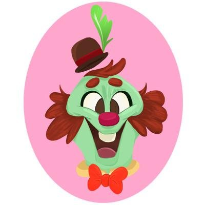
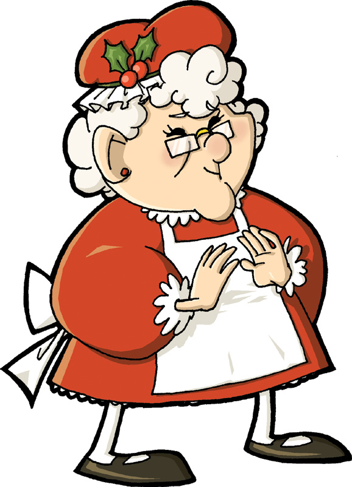
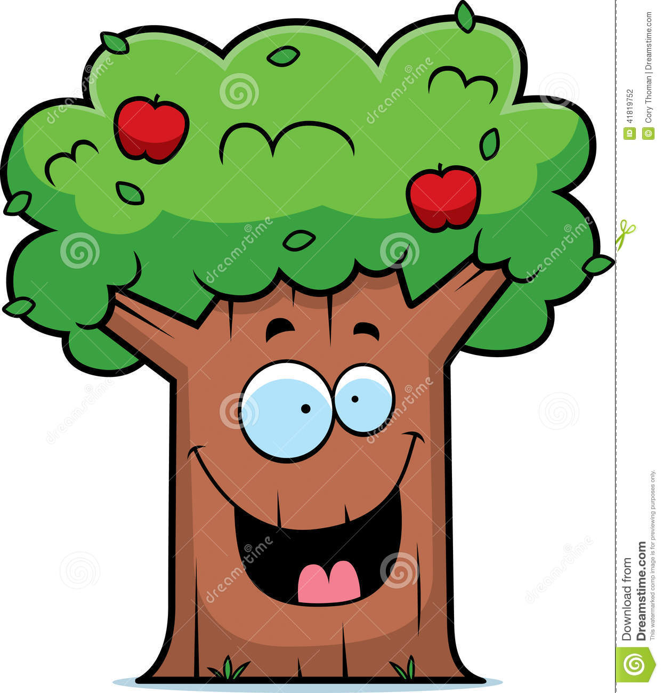
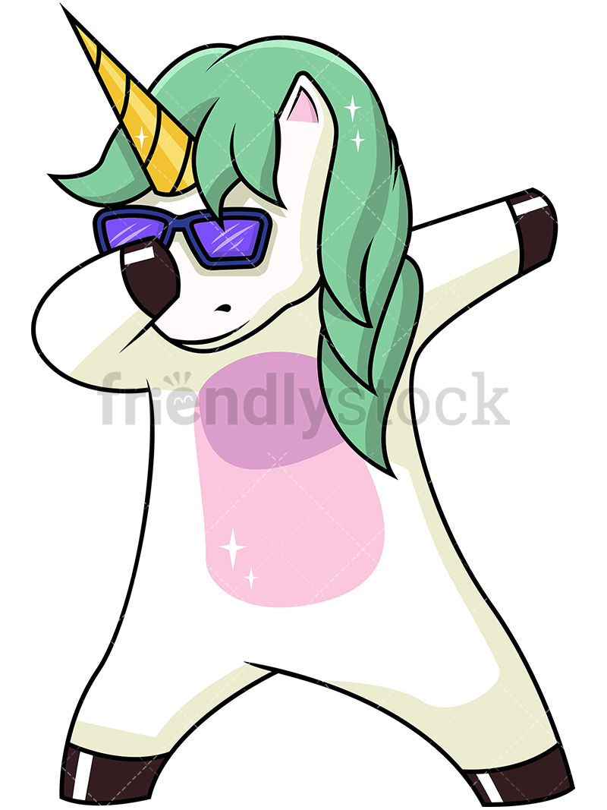

The Magical Cake saved the world by defeating the evil monsters that roamed the earth. The evil mastermind behind this sinster plot was the evil clown who went by Mr. Chuckles. His evil creatures forced people to laugh till they fainted and terrorized small childern with bad jokes and slapstick comedy. The Magical Cake Bob was able to save the day by destroying the centeral command center used to control the evil clown monsters within Mr. Chuckles lair.
Below lies a image of the vile mastermind of the sinster plot

This time a brand new villian caused trouble for our sugary sweet citizens. The villian called herself Mrs Claus and her minons her little helpers. She had her minons storm into bakerys and pastrie shops all over town stealing all the delelious treats inside. Magical Cake Bob came to our city's resuce once again and fought agaisnt the evil Mrs Claus and her elf minons. Magical Cake Bob was able to put a stop to the villianess and made her return all that she stole by talking her ear off for hours on how what she was doing was moraly wrong. When We asked her why she commited those heinous crimes she simiply repiled "Santa was looking a bit to thin to deliver this year". This woman appears to be delusional.
Below lies a image of this delusional old lady

This may be our town's strangest villian yet. A giant derpy apple tree sprung up in the middle of town. This strange tree called it's self the "Applevenger". This perplexing tree entrapped most of the city in its roots and dropped giant apples on the streets crushing whatever they landed on. Magical Cake Bob came to our resuce and defeated this villian by cutting off its roots and then ripping the tree from the ground and throwing the villian into a volcano.
Below lies a image of this strange tree

This villian might possiabley be the vilest villian to ever come. This creature went by the name "Dab-zilla". This evil creature forced our sugary sweet citizens to dab till they dropped. The town was filled with undescriable horror as they were forced to dab for hours on end. Finally Magical Cake Bob appered and defeated this vile villian but the damage had already been done. The citizens of our town will forever be scarred from this event.
Below lies a image of this vile creature
